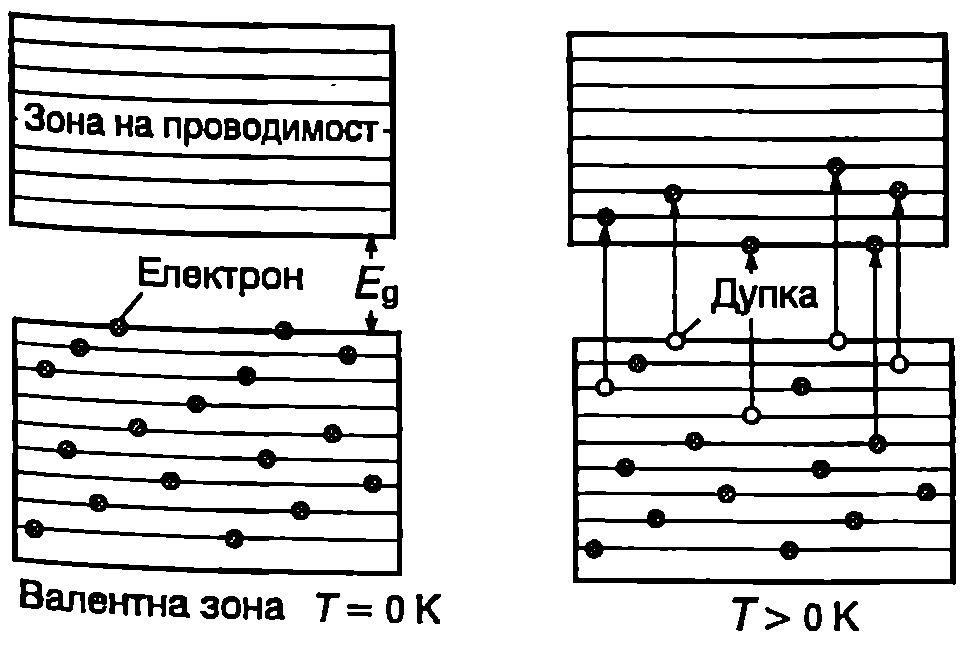
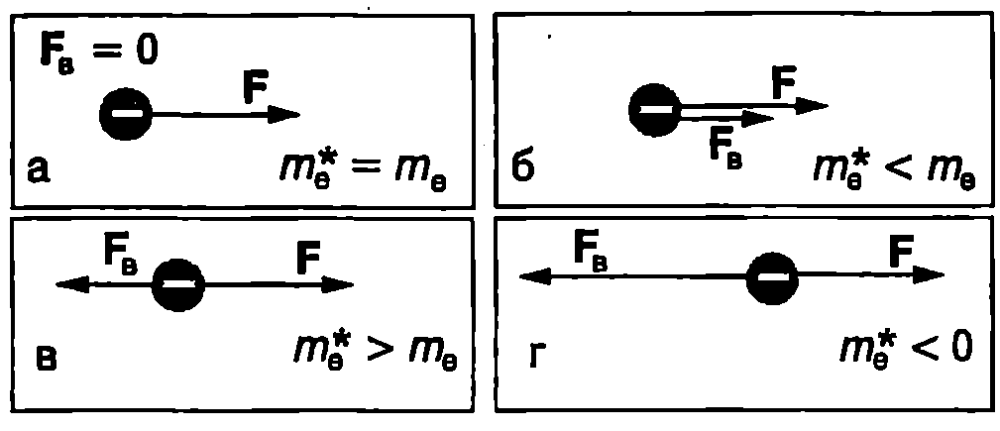
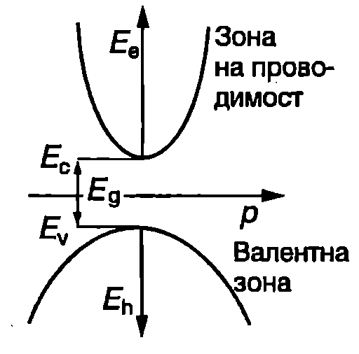
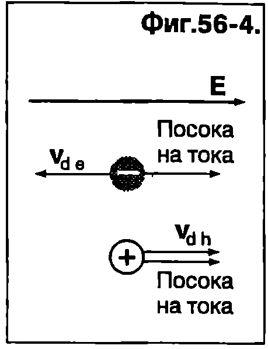
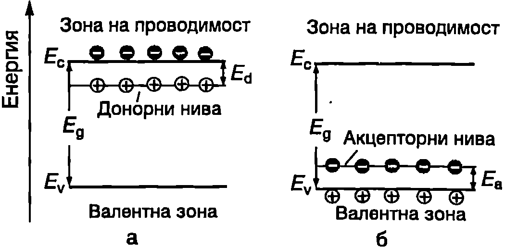
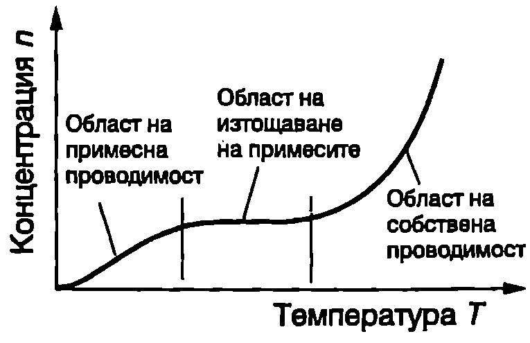

**Електрони и дупки **
Полупроводников кристал е поставен в електрично поле. Електрон от валентната зона, който се движи със скорост , създава електричен ток ,. Когато валентната зона е изцяло запълнена с електрони, електричното поле не променя симетрията в тяхното разпределение по скорости: на всеки електрон със скорост съответства електрон, който се движи със скорост . Затова пълният ток , обусловен от движението на всичките електрона от валентната зона, е равен на нула:
Нека един от електроните, който във валентната зона е имал скорост , да премине в зоната на проводимост. За да се определи токът, дължащ се на останалите във валентната зона електрони, трябва сумирането в уравнение \eqref{eq:56.1} да се извърши по всички електрони от валентната зона, с изключение на к-тия електрон:
където е отчетено равенство \eqref{eq:56.1}.
\begin{figure}[h!] \centering  \caption{} \label{fig:56.1} \end{figure}
Следователно пълният ток, дължащ се на всички електрони от валентна зона с едно свободно място, е еквивалентен на тока, получен в резултат на движението само на една частица с положителен заряд , намираща се в свободното състояние. Тази частица се нарича -носител или дупка. Подобно на електроните, дупките се характеризират с енергия, импулс и маса. Те запълват състоянията около върха на валентната зона по същия начин, както електроните заемат състоянията около дъното на зоната на проводимост (Фиг. \ref{fig:56.1}). Дупките са квазичастици, т.е. те не са частици в обичайния смисъл на това понятие, а физичните им свойства произтичат от реалното движение на електроните от валентната зона.
Ефективна маса
В класическата механика ускорението на едно тяло и приложената към него сила са свързани чрез уравнението , изразяващо втория принцип на механиката, където масата те мярка за инертността на тялото. Как се ускорява под действие на външно електрично поле електрон, намиращ се в периодичното кристално поле? За решаването на тази задача могат да се използват два подхода:
-
Да се определи равнодействащата на всички вътрешни сили и уравнението на втория принцип на механиката да се запише във вида . Сложният характер на изменение на вътрешните сили (на кристалното поле) обаче прави невъзможно решаването на това уравнение.
-
Електронът се разглежда като свободна частица (квазичастица), а влиянието на периодичното електрично поле в кристала се отчита, като действителната инертна маса на електрона се замени с т. нар. ефективна маса . Тогава уравнението на втория принцип на механиката запазва вида си
Ефективната маса може не само да се различава от масата на свободния електрон, но дори да бъде отрицателна, което се илюстрира от Фиг. \ref{fig:56.2}. Ако вътрешната сила е насочена по посока на външната сила (Фиг. \ref{fig:56.2}б), електронът се движи с по-голямо ускорение от ускорението, с което би се движил свободен електрон под действие само на силата . Съгласно с уравнение \eqref{eq:56.3} това съответства на по-малка ефективна маса: инертността на електрона е по-малка и той по-бързо реагира на външно въздействие. От енергетична гледна точка в случая кинетичната енергия на електрона нараства не само в резултат на работата на външната сила, но и за сметка на намаляване на потенциалната му енергия в периодичното поле на кристала. Анализирайте самостоятелно случаите, показани на Фиг. \ref{fig:56.2}а, в и г.
\begin{figure}[h!] \centering  \caption{} \label{fig:56.2} \end{figure}
По аналогичен начин се въвежда ве личината ефективна маса на дупките. Доказва се, че електроните от дъното на зоната на проводимост и дупките от върха на валентната зона имат положителни ефективни маси. Тяхната кинетична енергия се записва във вида
където и са ефективните маси на електроните и дупките (индексът “h” идва от английски: hole — дупка).
Зависимостта на енергията на електроните и дупките от техния импулс е показана на Фиг. \ref{fig:56.3}. Енергията на електроните се отчита от дъното на зоната на проводимост, а на дупките от върха на валентната зона. За повечето полупроводници , поради което параболата на Фиг. \ref{fig:56.3} е начертана по-широка. Ефективните маси се определят експериментално и с тяхна помощ се описват електричните свойства на твърдите тела.
\begin{figure}[h!] \centering  \caption{} \label{fig:56.3} \end{figure}
Свободни токови носители в полупроводниците са електроните от зоната на проводимост и дупките от валентната зона. Полупроводници, в които появата на свободни токови носители в свързана с преходи на електрони от валентната зона в зоната на проводимост, се наричат полупроводници със собствена проводимост. Собствената проводимост е обусловена от едновременното движение на еднакъв брой електрони и дупки, наречени собствени токови носители. Концентрациите на двата типа собствени токови носители са еднакви: , където е концентрацията на собствените електрони, а на дупките.
\begin{figure}[h!] \centering  \caption{} \label{fig:56.4} \end{figure}
В електрично поле с интензитет електроните и дупките се движат в противоположни посоки, но създаденият от тях ток има една и съща посока посоката на външното електрично поле (Фиг. \ref{fig:56.4}). За специфичната проводимост на полупроводниците, както при металите, е в сила уравнение \eqref{eq:53.12}, само че трябва да се отчете наличието на два типа токови носители:
където и са съответно подвижностите на електроните и на дупките. Формула \eqref{eq:53.11} за подвижността също остава в сила, като масата на свободния електрон се заменя с ефективната маса на електроните и дупките:
За повечето полупроводници , поради което електроните имат по-голяма подвижност.
Пример 56.1
Подвижността на електроните в германия (Ge) при стайна температура е . Определете подвижността на дупките, ако на тях се дължи от собствената проводимост на германия. \end{psexample}
Решение
За германия:
Концентрациите на собствените електрони и дупки са равни: в уравнение \eqref{eq:56.5} полагаме , съкращаваме на , и като отчетем горното равенство, получаваме:
[
\mu_h = 0,!44(\mu_e + \mu_h);
\mu_h = \frac{0,!44\mu_e}{0,!56} \approx 3500~\mathrm{\frac{cm^2}{V\cdot s}}.
]
Зависимост на собствената проводимост от температурата
При полупроводниците зависимостта се определя от два фактора: от температурната зависимост на подвижността (дължината на свободния пробег) и на концентрацията на свободните токови носители. Основните механизми на разсейване на токовите носители в полупроводниците са същите, както при металите: разсейване от трептенията на кристалната решетка и от примеси. Те дават степенна зависимост на подвижността от температурата:
Много по-съществен за проводимостта на полупроводниците е другият фактор, който при металите отсъства — температурната зависимост на концентрацията на свободните токови носители. При повишаване на температурата все повече електрони получават необходимата енергия, за да преодолеят забранената зона и да преминат в зоната на проводимост. Затова, както показват пресмятанията, концентрацията на собствените носители нараства с температурата по експоненциален закон:
където е ширината на забранената зона, а — константата на Болцман.
Експонентата е много бързо променяща се функция, поради което множителят доминира в температурната зависимост на проводимостта. Значително по-слабата зависимост на подвижността от температурата във формула \eqref{eq:56.5} може и да не се отчита. Приема се, че зависимостта се определя само от изменението на концентрацията на токови носители: нараства с температурата по същия експоненциален закон, както концентрацията на токовите носители, т.е.
където е константа. Специфичното съпротивление намалява експоненциално при повишаване на температурата:
Чрез измерване на зависимостта може да се определи експериментално ширината на забранената зона на полупроводник със собствена проводимост.
**Донори и акцептори **
Досега разглеждахме зонната структура на идеалните кристали, която се състои от редуващи се разрешени и забранени зони. Примесите в реалните кристали водят до нарушаване на идеалната периодичност на кристалното поле и в забранената зона възникват дискретни енергетични нива на примесите, на които могат да се разполагат електрони.
Да разгледаме силициев кристал, в който част от атомите на четиривалентния Si са заместени от петвалентния атом на фосфора (P). Четири от неговите валентни електрони образуват ковалентни връзки със съседните атоми на Si - енергетичните нива на тези електрони попадат във валентната зона. Петият електрон не участва в ковалентните връзки. Той е много по-слабо свързан към атома на фосфора P и енергетичното му ниво се оказва разположено в забранената зона, непосредствено под дъното на зоната на проводимост (Фиг. \ref{fig:56.5}а). Ако на такъв електрон се придаде допълнителна енергия , наречена енергия на активация, той преминава в зоната на проводимост. На освободеното място се създава дупка. За разлика от дупките във валентната зона, дупките на примесните нива са неподвижни: те са локализирани около определен примесен атом и не участват в насоченото движение на зарядите при протичане на електричен ток.
\begin{figure}[h!] \centering  \caption{} \label{fig:56.5} \end{figure} Примеси, в резултат на чиято йонизация се създават свободни електрони в зоната на проводимост и свързани към примесите дупки, се наричат донори, а техните енергетични нива в забранената зона донорни нива. Полупроводници, в които проводимостта се определя от донорите, се наричат електронни полупроводници, или полупроводници от -тип.
Нека част от атомите на Si са заместени с тривалентния атом на индия (In). На индия не достига един електрон, за да образува четири ковалентни връзки с най-близките съседни атоми на Si. Такъв електрон може да се привлече от някой друг атом Si, за което е необходима енергия . След захващане на електрон примесният атом се превръща в отрицателен йон. Съгласно със зонната теория процесът изглежда така: примесните атоми създават в забранената зона енергетични нива, раз положени на разстояние над върха на валентната зона (Фиг. \ref{fig:56.5}б). Електрон от валентната зона, след като получи допълнителна енергия , наречена енергия на активация, се захваща на примесно ниво. Там той е пространствено локализиран около примесния атом, а във валентната зона се създава свободна дупка.
Примеси, които захващат електрони от валентната зона и по този начин създават в нея дупки, се наричат акцептори. Техните енергетични нива се наричат акцепторни нива. Полупроводници, в които проводимостта се определя от създадените от акцепторите дупки, се наричат полупроводници с -тип проводимост.
**Температурна зависимост на концентрацията на свободните токови носители **
Ще разгледаме полупроводник от -тип с донорни нива, разположени близо до дъното на зоната на проводимост ().
При абсолютната нула те са запълнени с електрони, а зоната на проводимост в свободна — кристалът е изолатор.
При повишаване на температурата най-напред започва термична активация на електрони от донорните нива, които преминават в зоната на проводимост. Доказва се, че концентрацията и на електроните нараства с температурата по същия експоненциален закон , както концентрацията на собствените носители, само че енергията на активация е равна на (енергия на йонизация на донорите), а не на ширината на забранената зона . Температурният интервал, в който проводимостта на кристала се определя от йонизацията на донорите, се нарича област на примесна проводимост (Фиг. \ref{fig:56.6}).
При по-нататъшно повишаване на температурата се преминава в областта на изтощаване на примесите. В нея повечето донори вече са йонизирани и концентрацията на токовите носители почти не се изменя. От друга страна, температурата все още е твърде ниска, за да се появят голям брой собствени носители (тъй като , за преминаване на електрони от валентната в проводимата зона в необходима много по-голяма енергия). При високи температури концентрацията на собствените електрони и дупки започва бързо да нараства и полупроводникът навлиза в областта на собствена проводимост. В нея получените при йонизацията на донорите електрони са само малка част от общия брой на токовите носители, т.е. доминират собствените носители.
Температурната зависимост на специфичната проводимост на примесните полупроводници има същия характер, както представената на Фиг. \ref{fig:56.6} зависимост .
\begin{figure}[h!] \centering  \caption{} \label{fig:56.6} \end{figure}